전산응용토목제도기능사 (2007-09-16 기출문제)
1과목: 토목제도(CAD)
1. 흙에 접하거나 옥외의 공기에 직접 노출된 현장치기 콘크리트의 경우 D29 이상인 주철근의 최소 피복두께는?
- 30㎜
- 40㎜
- 50㎜
- 60㎜
(정답률: 38%)

2. 철근의 항복으로 시작되는 보의 파괴는 사전에 붕괴의 징조를 알리며 점진적으로 일어난다. 이러한 파괴 형태를 무엇이라 하는가?
- 연성파괴
- 항복파괴
- 취성파괴
- 피로파괴
(정답률: 68%)
3. 시멘트의 분말도에 대한 설명 중 틀린 것은?
- 시멘트입자의 가는 정도를 나타내는 것은 분말도라 한다.
- 시멘트의 분말도가 높으면 수화 작용이 빨라서 조기 강도가 커진다.
- 시멘트의 분말도가 높으면 풍화하기 쉽고, 건조수축이 커진다.
- 시멘트의 오토클레이브 팽창도 시험 방법에 의하여 분말도를 구한다.
(정답률: 48%)
4. 단철근 직사각형보를 강도 설계법으로 설계하고자 한다. 기본 가정이 틀린 것은?
- 보에 휨을 받기 전 임의의 단면은 휨을 받아 변형을 일으킨 뒤에도 그대로 평면을 유지한다.
- 항복강도에 해당하는 변형률보다 큰 변형률에 대해서도 철근의 응력은 그 변형률에 관계없이 항복강도와 같다.
- 보의 극한 상태에서의 휨 모멘트를 계산할 때에는 콘크리트의 압축강도는 무시한다.
- 철근과 콘크리트 사이의 부착은 완전하며, 그 경계면에서의 활동은 일어나지 않는다.
(정답률: 60%)
5. 다음 혼화재료 중 사용량이 비교적 많아 그 자체의 부피가 콘크리트의 배합 계산에 영향을 끼치는 것은?
- 플라이 애쉬
- AE제
- 감수제
- 유동화제
(정답률: 48%)
6. 강도 설계법에 의할 경우 균형 철근비가 0.002라면 단철근 직사각형 보에서 허용되는 최대 철근비는 얼마인가?
- 0.0113
- 0.0015
- 0.0019
- 0.0026
(정답률: 37%)
7. 90° 갈고리 90° 원의 끝에서 철근지름의 최소 몇 배 이상 연장하는가?
- 10배
- 12배
- 15배
- 20배
(정답률: 69%)
8. 일방향 슬래브의 최소 두께는 얼마 이상이어야 하는가?
- 8㎝
- 9㎝
- 10㎝
- 11㎝
(정답률: 74%)
9. 다음 시멘트 중 포틀랜드 시멘트가 아닌 것은?
- 중용열 포틀랜드 시멘트
- 조강 포틀랜드 시멘트
- 포틀랜드 포졸란 시멘트
- 저열 포틀랜드 시멘트
(정답률: 72%)
10. 시멘트의 응결 시간을 늦추기 위하여 사용되는 혼화제는?
- 급결제
- 지연제
- 발포제
- 감수제
(정답률: 85%)
11. 정철근을 정착할 때 연속부제에서 정철근은 얼마 이상을 부재의 같은 면을 따라 받침부까지 연장해야 하는가?
- 1/2
- 1/3
- 1/4
- 1/5
(정답률: 18%)
12. 연장 이형철근의 정착길이는 기본 정착길이에 보정계수를 곱하여 구한다. 다음 중 이 보정계수에 포함되지 않는 것은?
- α(철근배치 위치계수)
- β(에폭시 도막계수)
- λ(경량콘크리트계수)
- θ(철근 근입계수)
(정답률: 50%)
13. 철근 콘크리트 보의 배근에 있어서 주철근의 이음장소로 가장 적당한 곳은?
- 임의의 곳
- 보의 중앙
- 지점에서 d/4인 곳
- 인장력이 가장 작은 곳
(정답률: 62%)
14. 표준갈고리가 아닌 철근의 최소 구부림 내면 반지름은 철근 지름의 몇 배 이상이어야 하는가?
- 3배
- 4배
- 5배
- 6배
(정답률: 21%)
15. 강도 설계법의 기본 가정에서 보가 파괴를 일으킬 때의 압축측의 표면에서 나타나는 콘크리트의 최대 변형률은 얼마로 가정하는가?
- 0.001
- 0.002
- 0.003
- 0.004
(정답률: 84%)
16. 프리스트레스트 콘크리트의 사용 재료 중 PS 강재의 성질로 잘못 된 것은?
- 인장강도가 작아야 한다.
- 릴랙세이션이 작아야 한다.
- 적당한 연성과 인성이 있어야 한다.
- 응력 부식에 대한 저항성이 커야 한다.
(정답률: 46%)
17. 다음 중 일반적인 기둥의 종류가 아닌 것은?
- 띠철근 기둥
- 나선 철근 기둥
- 합성 기둥
- 강도 기둥
(정답률: 63%)
18. 다음 중 깊은 기초가 아닌 것은?
- 강관 널말뚝 기초
- 말뚝 기초
- 케이슨 기초
- 전면 기초
(정답률: 40%)
19. 교량의 종류에 있어서 통로의 위치에 따라 분류한 것으로 잘못된 것은?
- 상로교
- 중로교
- 하로교
- 과선교
(정답률: 67%)
20. 철근 콘크리트를 사용하는 이유가 아닌 것은?
- 철근과 콘크리트의 부착력이 매우 크다.
- 철근속의 콘크리트는 부식이 빨리 된다.
- 철근과 콘크리트의 열팽창 계수가 거의 같다.
- 철근과 콘크리트의 외력에 상호 보완적 역할을 한다.
(정답률: 72%)
2과목: 철근콘크리트
21. 강재의 보위에 철근 콘크리트 슬래브를 이어 쳐서 양자 간 일체로 작용하도록 한 토목 구조는?
- 일체구조
- 합성구조
- 혼합구조
- 복식구조
(정답률: 54%)
22. 원심하중은 차량이 곡선상을 달릴 때 나타나는데 이때 교면 상 어느 정도 높이에서 수평방향으로 작용하는 것으로 보는가?
- 1.2m
- 1.5m
- 1.8m
- 2.0m
(정답률: 30%)
23. 구조 재료로서 강재의 단점으로 올바른 것은?
- 재료의 균질성이 떨어진다.
- 부재를 개수하거나 보강하기 어렵다.
- 차량 통행에 의하여 소음이 발생하기 쉽다.
- 강 구조물을 사전 제작하여 조림이 힘들다.
(정답률: 77%)
24. 보통 무근 콘크리트로 만들어지며 자중에 의하여 안정을 유지하는 옹벽의 형태를 무엇이라 하는가?
- 중력식 옹벽
- L형 옹벽
- 캔틸레버 옹벽
- 뒷부벽식 옹벽
(정답률: 56%)
25. 포준 트럭하중 DB-18로 설계되는 교량은?
- 1 등교
- 2 등교
- 3 등교
- 4 등교
(정답률: 54%)
26. 교량의 구성에 있어서 상부구조에 속하지 않는 것은?
- 바닥판
- 바닥틀
- 주트러스
- 교대
(정답률: 55%)
27. 도로교 설계 기준에서 규정하고 있는 교량의 상부구조에 대한 충격계수(i) 식은 어느 것인가?
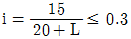
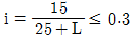
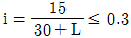
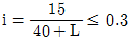
(정답률: 22%)
28. 옹벽의 전도에 대한 안전율은 최소 얼마 이상이어야 하는가?
- 1
- 2
- 3
- 4
(정답률: 61%)
29. 일반적인 철근콘크리트에서 fck 로 나타내는 설계기준 강도의 값은 표준 양생을 실시한 공시체의 재령 몇 일의 강도를 말하는가?
- 3일
- 7일
- 14일
- 28일
(정답률: 75%)
30. 토목구조물의 특징을 잘못 나타낸 것은?
- 일반적으로 규모가 크다.
- 대부분의 공공의 목적으로 건설된다.
- 구조물의 수명이 길다.
- 다량생산이다.
(정답률: 83%)
31. 다음 중 척도의 종류가 아닌 것은?
- 배척
- 축척
- 현척
- 외척
(정답률: 79%)
32. 도면에서 물체의 보이지 않는 부분을 나타내는 선으로 가장 적당한 것은?
(정답률: 87%)
33. CAD작업에서 가장 최근에 입력한 점을 기준으로 하여 좌표가 시작되는 좌표계는?
- 절대 좌표계
- 사용자 좌표계
- 표준 좌표계
- 상대 좌표계
(정답률: 54%)
34. 도면을 철하고자 할 때 어떤 쪽으로 철함을 원칙으로 하는가?
- 위쪽
- 아래쪽
- 왼쪽
- 오른쪽
(정답률: 62%)
35. 도로 설계 시 굴곡부 노선에 사용되는 기호 중 접선 길이를 표시한 것은?
- I.P
- I
- T.L
- B.C
(정답률: 39%)
36. 토목 구조물의 일반적인 도면 작도 순서에서 가장 먼저 그리는 부분은?
- 각부 배근도
- 일반도
- 주철근 조립도
- 단면도
(정답률: 37%)
37. 그림은 어떠한 재료 단면의 경제를 나타낸 것인가?
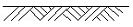
- 지반면
- 자갈면
- 암반면
- 재단마크
(정답률: 84%)
38. 도면 번호, 도면 명, 도면의 작성일, 제도자의 이름 등 도면 관리상 필요한 내용을 기입한 곳을 무엇이라 하는가?
- 중심마크
- 표제란
- 윤곽선
- 재단마크
(정답률: 89%)
39. CAD시스템에서 성격이 다른 장치는?
- 키보드
- 디지타이저
- 태블릿
- 플로터
(정답률: 68%)
40. 주로 토목이나 건축에서 현장의 겨냥도, 구조물의 조감도등에 쓰이는 방법은?
- 축투상도법
- 투시도법
- 사투상도법
- 정투상도법
(정답률: 44%)
3과목: 토목일반구조
41. 다음 중 선이 교차할 때 표시법으로 옳지 않은 것은?
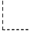
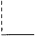
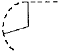
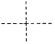
(정답률: 75%)
42. 다음 그림과 같은 물체를 제3각법으로 나타낼 때 평면도는?
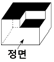
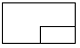
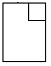
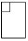
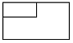
(정답률: 78%)
43. 다음 중 콘크리트를 나타내는 단면 표시는?
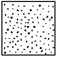
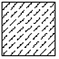
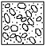
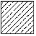
(정답률: 84%)
44. 구조도에 표시하는 것이 곤란한 부분의 형상, 치수, 철근종류 등을 자세하게 표시한 도면을 무엇이라 하는가?
- 일반도
- 투시도
- 상세도
- 설명도
(정답률: 76%)
45. 도면을 철하지 않을 경우 A3 도면 윤곽선의 여백 치수의 최소값은 얼마로 하는 것이 좋은가?
- 25㎜
- 20㎜
- 10㎜
- 5㎜
(정답률: 59%)
46. 다음 선의 종류 중 중심선을 나타낼 때 사용하는 선은?
- 실선
- 파선
- 일점쇄선
- 이점쇄선
(정답률: 79%)
47. 다음 중 같은 크기의 물체를 도면에 그릴 때 가장 작게 그려지는 척도는?
- 1 : 1
- 1 : 2
- 1 : 50
- 5 : 1
(정답률: 67%)
48. 문자의 크기를 나타낼 때 무엇을 기준으로 하는가?
- 모양
- 굵기
- 높이
- 서체
(정답률: 82%)
49. CAD시스템의 특징을 나열한 것이다. 틀린 것은?
- 도면의 분석, 수정, 삽입, 제작이 정확하고 빠르다.
- 방대한 도면을 여러 사람이 동시에 작업하여도 표준화를 이룰 수 있다.
- 2차원은 물론 3차원의 설계도면과 움직이는 도면까지 그릴 수 있다.
- 편리한 점은 많으나 설계 도면의 데이터베이스 구축이 불가능하다.
(정답률: 76%)
50. 도로폭 10m로하고 3m 높이의 흙쌓기를 그림과 같이 하였을 때 횡단면도에 나타내는 (H)의 길이는?
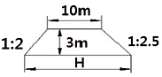
- 13m
- 16.5m
- 23.5m
- 28.5m
(정답률: 36%)
51. CAD 시스템으로 도형을 작성할 때 기본요소가 아닌 것은?
- 점
- 선
- 면
- 부피
(정답률: 85%)
52. 아래 표에서 도면의 작성 순서를 옳게 나타낸 것은?
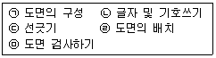
- ㉠→㉡→㉢→㉣→㉤
- ㉠→㉣→㉡→㉢→㉤
- ㉠→㉣→㉢→㉡→㉤
- ㉠→㉡→㉣→㉢→㉤
(정답률: 68%)
53. 다음 작도 통칙에 대한 설명으로 잘못된 것은?
- 그림은 간단히 하고, 중복을 피한다.
- 대칭적인 것은 중심선의 한쪽을 외형도, 반대쪽을 단면도로 표시한다.
- 경사면을 가진 구조물의 표시는 경사면 부분만의 보조도를 넣을 수 있다.
- 보이는 부분은 파선으로 표시하고 숨겨진 부분은 실선으로 표시한다.
(정답률: 77%)
54. 다음 중 도면에서 가장 굵은선이 사용되는 것은?
- 가상선
- 절단선
- 해칭선
- 외형선
(정답률: 72%)
55. 글자의 굵기는 한글자, 숫자 및 영자의 경우에는 글자 높이의 얼마로 하는 것이 적당한가?
- 1/3
- 1/6
- 1/9
- 1/12
(정답률: 68%)
56. 다음 중 치수에 대한 설명으로 잘못된 것은?
- 치수는 일반적으로 마무리 치수로 표시한다.
- 치수는 중복을 피한다.
- 치수의 단위는 ㎜를 원칙으로 한다.
- 치수의 단위를 항상 기입한다.
(정답률: 69%)
57. 철근의 기계적 이음을 표시하고 있는 것은?
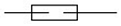
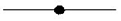
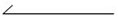
(정답률: 81%)
58. 다음 그림은 무엇을 표시하는 것인가?
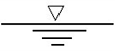
- 암반면
- 지반면
- 일반면
- 수면
(정답률: 85%)
59. 도면을 접을 때 기준이 되는 크기는?
- A0
- A1
- A3
- A4
(정답률: 83%)
60. 콘크리트 구조물의 제도에서 벽체 철근의 기호를 표시한 것은?
- Ⓦ
- Ⓢ
- Ⓒ
- Ⓟ
(정답률: 61%)